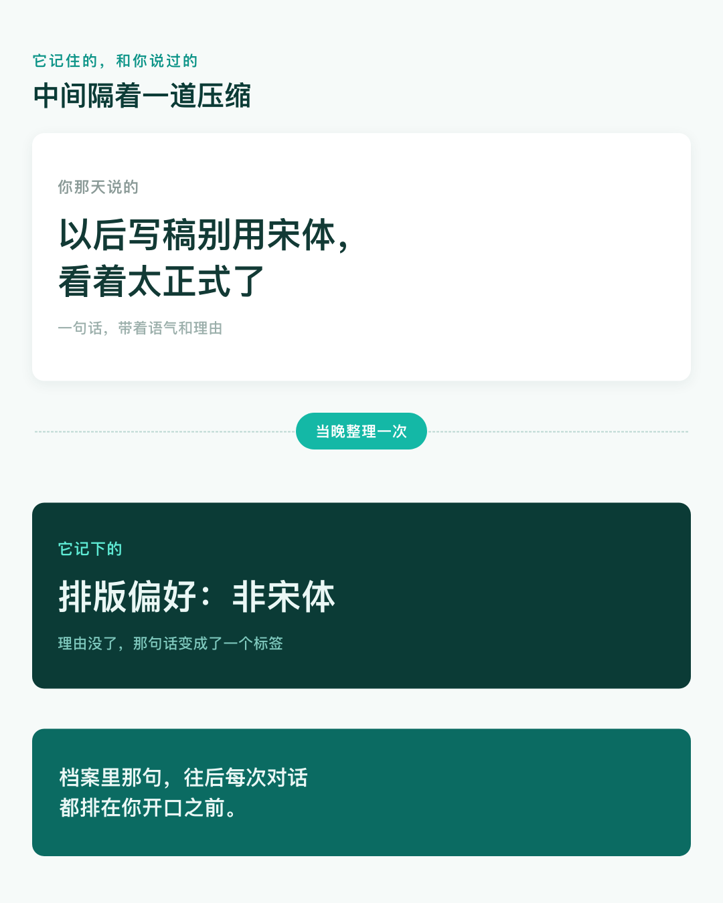

三天前你交代过一句，以后写稿别用宋体，看着太正式。今天新建一个任务，什么都没提，排出来的稿子就是黑体。
你大概会觉得，它还挺懂你。
昨晚它把这句话整理成一条笔记，今天开工前先读了一遍，然后才开始排。
一、不是当场听懂，是隔夜抄的笔记
官方是这么写的：
提取频率：每晚整理当天会话，仅您本人可见。
白天你说的话，当晚才被整理成记忆。当天接着聊，它靠的是这一场对话本身；第二天开新任务，它靠的是昨晚那份笔记。
官方在「查看」那一栏写着「记忆摘要每晚重新生成」，它每晚都会重写。同一件事，昨天摘要里可能写着「在做一个公众号系列」，今天变成「有长期写作任务」。你没改过任何设置，读到的却是两个版本。
二、官方自己说它可能记错
这句在「使用建议」里，是官方主动写的：
记忆由模型基于会话内容自动抽取，可能存在概括偏差或时效性问题，在依赖记忆做重要判断前建议先核验
「概括偏差」指的就是：它记的不是你的原话，是压缩过的一句。你说以后写稿别用宋体，因为看着太正式。「看着太正式」这半句最容易被压掉，剩下一条「偏好非宋体」。下次做一张对外海报，它也避开宋体，可你当时说的是稿子。
「时效性」讲的是另一件事。三个月前那个偏好还躺在摘要里，你上个月就改了主意。

三、新任务一个字没打，它已经知道你是谁
官方在「使用方式」里列了两条。第一条是：
注入系统提示词作为上下文
意思是，你打开一个新任务，光标还在闪，关于你的那几条已经在它手上了。所以它一上来就知道你在写公众号、排稿不爱用宋体、上周那个稿子卡在哪。
不是它记性好，是它每次开场先翻了一遍档案。
第二条是检索。「支持对会话历史的检索」，官方举的例子是「上周做过什么」「之前聊过的 XX」。所以你真去问它上周那个稿子改到哪了，它有东西可答。只是这个答案由两样拼起来：检索到的片段，加上昨晚的摘要，两层都已经是压缩过的。
「收集范围」那一栏列了四类，事实信息、偏好习惯、人物关系、跟进事项。后两类不是你，是你提过的人。你把客户的名字、同事的分工贴进对话，它们会跟你的排版偏好一起进档案。
官方在隐私提醒里补了一句：会话中如涉及他人个人信息，请在提交前确认已获得相关授权。
四、它做得不好的地方
一是核验这件事交给了你，却没给标准。「建议先核验」写在文档里，可你打开摘要，一条条看过去，没有一条标着「这条可能不准」。哪条该信、哪条该改，只能对着自己的记忆回想。
二是删掉之后，做过的东西不会跟着变。官方写得很清楚：
关闭或删除记忆条目后，相应数据将停止用于后续对话，但已生成的输出不会因此追溯撤回
你用那条错记忆做过一份稿子，删掉记忆，稿子还是错的。停用的是以后，不是以前。
三是关闭和删除不是一回事。删除那一栏写的是「可以清空当前记忆」，关闭那句写的是「关闭后将停止提取新的记忆」。点了关闭，已有的那几条还在，只是不再用于对话。想清掉，得点删除。
今晚去看一眼
路径是官方写的：头像 → 设置 → 记忆与进化。
官方还写了一条：记忆不消耗积分，提取由 WorkBuddy 自费完成，不额外扣 token。所以别为了省积分去关它。
打开之后不用全改，就看两件事：哪条你已经不这么想了，哪条根本不是你原话。判断的时候别凭感觉，去翻那次对话，看你是不是真这么说过。
改的时候有两个入口：右上角的编辑图标，用对话告诉它要记住或忘记什么；删除图标，清空当前记忆。
嫌一条条改麻烦，可以直接导入。点「开始导入」，把它给的示例提示词复制到别的 AI 里跑一遍，把结果粘回来，一次把你的习惯重写一遍。